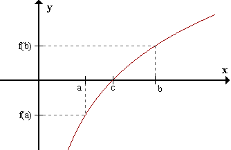

Problema 26
Teorema del valor intermedio. Si \(f\) es continua en \( [a,b] \) y \( f(a) < 0 < f(b) \), entonces existe algún \(x\) en \( [a,b] \) tal que \(f(x)=0\). Demostrar usando el método de bisección de Bolzano.
Geométricamente, el teorema establece que si dos puntos \((a, f(a))\) y \((b, f(b))\) de la gráfica de una función continua en el intervalo cerrado \([a,b]\) están situados en diferentes lados del eje \(x\), entonces la gráfica interseca al eje en algún punto entre \(a\) y \(b\). Claro que pueden haber varias intersecciones.
Demostración (Método de Bisección de Bolzano). Supongamos que \(f(a) < 0\) y \(f(b) > 0\). (La demostración sería análoga si supusiéramos \(f(a) > 0\) y \(f(b) < 0\)).
Consideremos el punto medio de \([a,b]\):
$$ \frac{a+b}{2} $$Si \( f( \frac{a+b}{2})=0 \) queda demostrado el teorema. Sino, \(f\) será positiva o negativa en \(\frac{a+b}{2}\).
Tomemos una de las mitades del intervalo \([a,b]\) donde la función sea negativa en un extremo y positiva en el otro. Llamemos \(a_1\) y \(b_1\) a los extremos de este intervalo. Ahora dividamos \([a_1,b_1]\) a la mitad. Si \(f\) no vale cero en el punto medio, será positiva o negativa. Tomemos la mitad donde \(f\) tiene distinto signo en cada extremo, y llamemos a estos puntos \(a_2\) y \(b_2\).
Si continuamos de esta manera, obtenemos una sucesión de intervalos
$$ [a, b], [a_1, b_1], [a_2, b_2],... $$tales que
$$ a\leq a_1 \leq a_2 \leq ... \leq a_n \ \ y \ \ b \geq b_1 \geq b_2 \geq ... \geq b_n. $$ Es decir, Los \(a_i\) forman una sucesión creciente, los \(b_i\) forman una sucesión decreciente y se cumple que \(a_i < b_i, \forall i \in \mathbb{N}\).Veamos cúal es el \( \lim_{n\to \infty} (b_n -a_n) \).
\(b_n - a_n\) es la longitud del intervalo \([a_n, b_n]\). La longitud del intervalo \([a_1, b_1]\) es \(\frac{b-a}{2}\), la mitad de la longitud de \([a,b]\) que es \(b-a\). La longitud del intervalo \([a_2, b_2]\) es \( \frac{b-a}{2^2}\), la mitad de la longitud de \([a_1, b_1]\) que es \(\frac{b-a}{2}\). Y siguiendo de esta manera, la longitud del intervalo \([a_n, b_n]\) es \(\frac{b-a}{2^n}\).
De modo que,
$$ \lim_{n\to \infty} (b_n -a_n)=\lim_{n\to \infty} \frac{b-a}{2^n}=0. $$Cuando tenemos una sucesión de intervalos como los anteriores, se dice que es una sucesión de intervalos anidados o encajados. Entonces se cumplirá el siguiente teorema:
Teorema de los intervalos anidados de Cantor. Para cada \(n \in \mathbb{N}\), sea \(I_n=[a_n, b_n]\) un intervalo cerrado en \(\mathbb{R}\). Si
- \(I_{n+1} \subset I_n\), para cad \(n \in \mathbb{N}\)
- \( \lim_{n\to \infty} (b_n -a_n)=0. \)
Entonces, existe un único punto \(c \in \mathbb{R}\) tal que \(c\) pertence a todos los intervalos \(I_n\). Es decir \( \{c\}=\cap_{n \in \mathbb{N}} I_n. \)